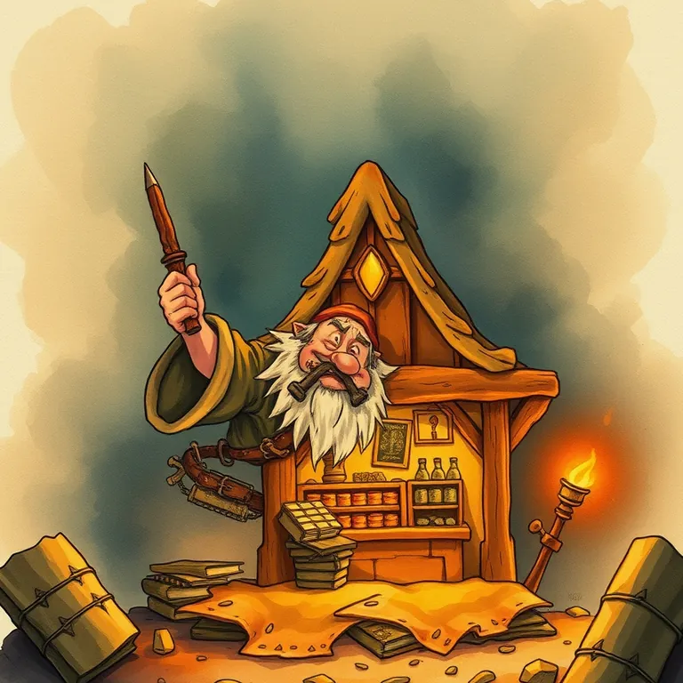

Durable

Durable builds a full small-business website, complete with copy, images, and a booking calendar, from a one-line business description in under a minute, and the result is genuinely free to publish on a durable.site subdomain. Paid tiers start at $25/month (Launch) for a custom domain, unlimited CRM contacts, and automated lead replies, up to $49/month (Grow) for higher AI-agent limits and multi-site management. The verdict is a strong pick for service businesses that need a live, bookable site today and don't want to touch a page builder, weaker fit for anyone who wants real design control.
Durable will generate you a working small-business website faster than you can find your domain registrar password. The free plan's five images and ten AI chat messages a month feel like a demo, which, functionally, it is, the real product starts at Launch.
- Value for price7/10
- Capability6/10
- Ease of use8.5/10
- Trial safety8/10
Durable differs from a general-purpose builder like Framer or Webflow by skipping the page-editor step almost entirely: describe the business once, and it generates copy, a logo, stock imagery, and a booking calendar together, then bundles in a lightweight CRM and lead-reply automation that most website builders leave to a separate tool.
Pricing breakdown
- Free ($0): durable.site subdomain, unlimited AI-generated pages, basic SEO, CRM up to 10 customers, 5 images/month, 10 AI chat messages/month
- Launch ($25/mo, $22/mo billed annually): free custom domain, unlimited CRM contacts, automated replies to up to 20 leads/month, online booking synced to your calendar, 50 images/month, priority live chat
- Grow ($49/mo, $41/mo billed annually): everything in Launch plus up to 5 sites, unlimited team members, daily blog posts and AI ranking refreshes, 500 images/month, 1:1 onboarding call
Where it falls short
The free plan's 10-customer CRM cap and 10 AI messages a month make it a proof-of-concept, not a real business tool, most service businesses will hit those limits inside the first week of real bookings. Durable also isn't a design tool: templates are functional and fast, not distinctive, and there's no HTML-level customization if you want something that doesn't look assembled. If design control or e-commerce depth matters more than speed, a page builder like Framer or Webflow is a better fit even with the extra setup time.
Pros
- A working, bookable website with a real CRM in minutes, no page-builder learning curve
- Free plan is genuinely usable to validate a business idea before paying anything
- Launch bundles booking, CRM, and lead automation that would otherwise be three separate subscriptions
Cons
- Free plan's 10-customer CRM and 10 monthly AI messages are too thin for a real, active business
- No HTML customization, design is fast but generic
- Weak fit for anything beyond a simple service or local business site
Common questions
Is Durable's free plan enough to launch a real business site?
It's enough to test the idea. The free plan gives you a working, bookable durable.site website with a 10-customer CRM and basic AI chat, genuinely usable to validate whether the business idea works before paying anything.
When should I upgrade to Launch?
Once you need a custom domain or you're getting more than about 10 real leads a month. The free plan's CRM and AI message caps are too thin for an actively booking business, Launch removes both limits.
Can I customize Durable's design like a page builder?
Not really. There's no HTML-level customization, templates are fast and functional but generic. If distinctive design matters more than speed to launch, a page builder like Framer is a better fit even with more setup time.